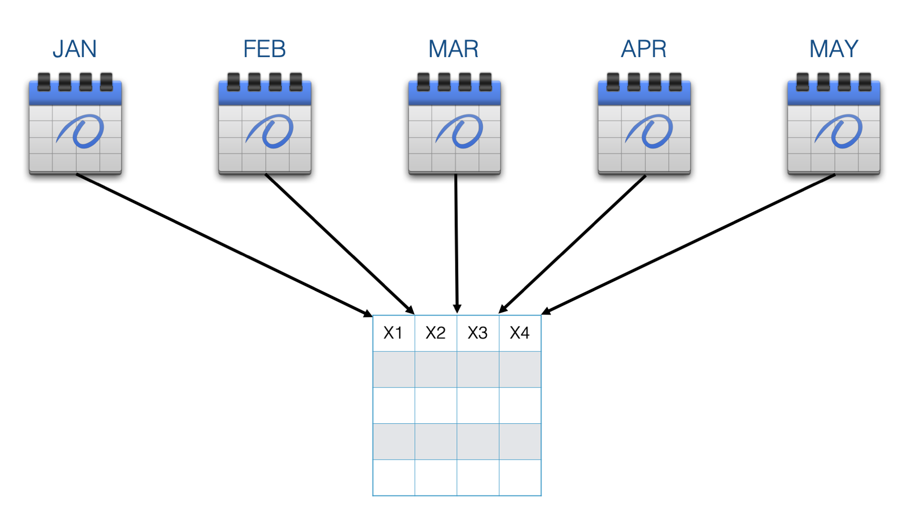
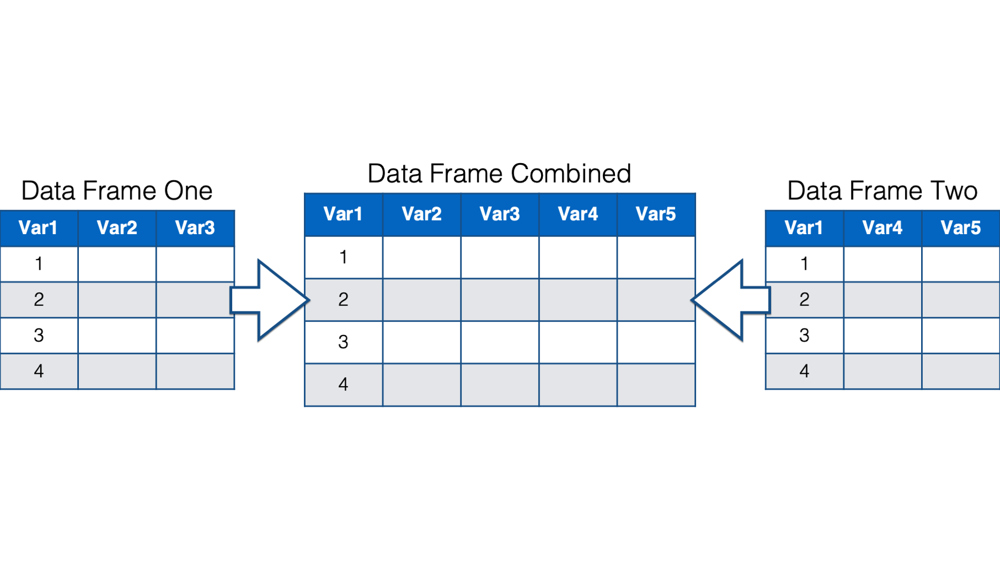

31 Working with multiple data frames
Up to this point, the data we’ve needed has always been stored in a single data frame. However, that won’t always be the case. At times you may need to combine data from multiple agencies in order to complete your analysis.

Additionally, large studies often gather data at multiple sites.

Or, data is sometimes gathered over long periods of time. When this happens, it is not uncommon for observations across the study sites or times to be stored as separate data sets.

Another common scenario in which you end up with multiple data sets for the same study is when researchers use different data sets to record the results of different survey instruments or groups of similar instruments.

In any of these cases, you may need to combine data from across data sets in order to complete your analysis.

This combining of data comes in two basic forms: combining vertically and combining horizontally. First we’ll learn about combining vertically, or adding rows. Later, we’ll learn about combining horizontally, or adding columns.
Below we have two separate data frames - data frame one and data frame two. In this case both data frames contain the exact same variables: Var1, Var2, and Var3. However, they aren’t identical because they contain different observations.

Now, you want to combine these two data frames and end up with one data frame that includes the observations from data frame two listed directly below the observations from data frame one. This is a situation where we want to combine data frames vertically.

When combining data frames vertically, one of the most important questions to ask is, “do the data frames have variables in common?” Just by examining data frame one and data frame two, you can see that the variables have the same names. How can you check to make sure that the variables also contain the same type of data? Well, you can use the str() or glimpse() functions to compare the details of the columns in the two data frames.
Sometimes, you might find that columns that have different names across data frames contain the same data. For example, suppose that data frame one has a variable named ID and data frame two has a variable named subject ID. In this situation you might want R to combine these two variables when you combine data frames.
On the other hand, you may find that variables that have the same name across data frames, actually contain different data. For example, both data frames may contain the variable date. But, one date variable might store birth date and the other might store date of admission. You would not want to combine these two variables.
As you may have guessed, when combining data frames vertically, it’s easiest to combine data frames that have identical variables. However, you will also learn how to combine data frames that have different variables.
31.1 Combining data frames vertically: Adding rows
Suppose you are working on a multisite clinical trial recruiting participants over multiple years. You have a data frame named Trial, that stores the number of participants recruited each year, as well as the number of participants who experienced the outcome of interest. Another data frame named Trial_2020 was just sent to you with the recruitment numbers for the year 2020.

You want to add the observations about the participants recruited in 2020 to the master data frame so that it contains the information about all years. To do this, you bind the rows in the trial_2020 data frame to the trial data frame.
Let’s go ahead and load dplyr:
library(dplyr)And simulate our data frames:
trial <- tibble(
year = c(2016, 2017, 2018, 2019),
n = c(501, 499, 498, 502),
outcome = c(51, 52, 49, 50)
) %>%
print()## # A tibble: 4 × 3
## year n outcome
## <dbl> <dbl> <dbl>
## 1 2016 501 51
## 2 2017 499 52
## 3 2018 498 49
## 4 2019 502 50trial_2020 <- tibble(
year = 2020,
n = 500,
outcome = 48
) %>%
print()## # A tibble: 1 × 3
## year n outcome
## <dbl> <dbl> <dbl>
## 1 2020 500 48We can see above that column names and types in both data frames are identical. In this case, we can easily bind them together vertically with dplyr’s bind_rows() function:
trial %>%
bind_rows(trial_2020)## # A tibble: 5 × 3
## year n outcome
## <dbl> <dbl> <dbl>
## 1 2016 501 51
## 2 2017 499 52
## 3 2018 498 49
## 4 2019 502 50
## 5 2020 500 48👆Here’s what we did above:
We used
dplyr’sbind_rows()function to vertically stack, or bind, the rows intrial_2020to the rows intrials.You can type
?bind_rowsinto your R console to view the help documentation for this function and follow along with the explanation below.The first argument to the
bind_rows()function is the...argument. Typically, we will pass one or more data frames that we want to combine to the...argument.
31.1.1 Combining more than 2 data frames
What if we want to vertically combine more than two data frames? This isn’t a problem. Thankfully, bind_rows() lets us pass as many data frames as we want to the ... argument. For example:
trial_2021 <- tibble(
year = 2021,
n = 598,
outcome = 57
) %>%
print()## # A tibble: 1 × 3
## year n outcome
## <dbl> <dbl> <dbl>
## 1 2021 598 57trial %>%
bind_rows(trial_2020, trial_2021)## # A tibble: 6 × 3
## year n outcome
## <dbl> <dbl> <dbl>
## 1 2016 501 51
## 2 2017 499 52
## 3 2018 498 49
## 4 2019 502 50
## 5 2020 500 48
## 6 2021 598 5731.1.2 Adding rows with differing columns
What happens when the data frames we want to combine don’t have identical sets of columns? For example, let’s say that we started collecting data on adverse events for the first time in 2020. In this case, trials_2020 would contain a column that trials doesn’t contain. Can we still row bind our two data frames? Let’s see:
trial_2020 <- tibble(
year = 2020,
n = 500,
outcome = 48,
adv_event = 3 # Here is the new column
) %>%
print()## # A tibble: 1 × 4
## year n outcome adv_event
## <dbl> <dbl> <dbl> <dbl>
## 1 2020 500 48 3trial %>%
bind_rows(trial_2020)## # A tibble: 5 × 4
## year n outcome adv_event
## <dbl> <dbl> <dbl> <dbl>
## 1 2016 501 51 NA
## 2 2017 499 52 NA
## 3 2018 498 49 NA
## 4 2019 502 50 NA
## 5 2020 500 48 3We sure can! R just sets the value of adv_event to NA in the rows that came from the trial data frame.
31.1.3 Differing column positions
Next, let’s say that the person doing data entry accidently put the columns in a different order in 2020. Is bind_rows() able to figure out which columns go together?
trial_2020 <- tibble(
year = 2020,
n = 500,
adv_event = 3, # This was previously the fourth column
outcome = 48 # This is the thrid column in trial
) %>%
print()## # A tibble: 1 × 4
## year n adv_event outcome
## <dbl> <dbl> <dbl> <dbl>
## 1 2020 500 3 48trial %>%
bind_rows(trial_2020)## # A tibble: 5 × 4
## year n outcome adv_event
## <dbl> <dbl> <dbl> <dbl>
## 1 2016 501 51 NA
## 2 2017 499 52 NA
## 3 2018 498 49 NA
## 4 2019 502 50 NA
## 5 2020 500 48 3Yes! The bind_rows() function binds the data frames together based on column names. So, having our columns in a different order in the two data frames isn’t a problem. But, what happens when we have different column names?
31.1.4 Differing column names
As a final wrinkle, let’s say that the person doing data entry started using different column names in 2020 as well. For example, below, the n column is now named count and the outcome column is now named outcomes. Will bind_rows() still be able to vertically combine these data frames?
trial_2020 <- tibble(
year = 2020,
count = 500,
adv_event = 3,
outcomes = 48
) %>%
print()## # A tibble: 1 × 4
## year count adv_event outcomes
## <dbl> <dbl> <dbl> <dbl>
## 1 2020 500 3 48trial %>%
bind_rows(trial_2020)## # A tibble: 5 × 6
## year n outcome count adv_event outcomes
## <dbl> <dbl> <dbl> <dbl> <dbl> <dbl>
## 1 2016 501 51 NA NA NA
## 2 2017 499 52 NA NA NA
## 3 2018 498 49 NA NA NA
## 4 2019 502 50 NA NA NA
## 5 2020 NA NA 500 3 48In this case, bind_rows() plays it safe and doesn’t make any assumptions about whether columns with different names belong together or not. However, we only need to rename the columns in one data frame or the other to fix this problem. We could do this in separate steps like this:
trial_2020_rename <- trial_2020 %>%
rename(
n = count,
outcome = outcomes
)
trial %>%
bind_rows(trial_2020_rename)## # A tibble: 5 × 4
## year n outcome adv_event
## <dbl> <dbl> <dbl> <dbl>
## 1 2016 501 51 NA
## 2 2017 499 52 NA
## 3 2018 498 49 NA
## 4 2019 502 50 NA
## 5 2020 500 48 3Or, we could rename and bind in a single step by nesting functions like this:
trial %>%
bind_rows(
trial_2020 %>%
rename(
n = count,
outcome = outcomes
)
)## # A tibble: 5 × 4
## year n outcome adv_event
## <dbl> <dbl> <dbl> <dbl>
## 1 2016 501 51 NA
## 2 2017 499 52 NA
## 3 2018 498 49 NA
## 4 2019 502 50 NA
## 5 2020 500 48 3👆Here’s what we did above:
We nested the code that we previously used to create the
trial_2020_renamedata frame inside of thebind_rows()function instead creating the actualtrial_2020_renamedata frame and passing it tobind_rows().I don’t think you can really say that one method is “better” or “worse”. The first method requires two steps and creates a data frame in our global environment that we may or may not ever need again (i.e., potentially just clutter). However, one could make an argument that the first method is also easier to glance at and read. I would typically use the second method, but this is really just a personal preference in this case.
And that’s pretty much it. The bind_rows() function makes it really easy to combine R data frames vertically. Next, let’s learn how to combine data frames horizontally.
31.2 Combining data frames horizontally: Adding columns
In this section we will once again begin with two separate data frames - data frame one and data frame two. But, unlike before, these data frames share only one variable in common. And, the data contained in both data frames pertains to the same observations.

Our goal is once again to combine these data frames. But, this time we want to combine them horizontally. In other words, we want a combined data frame that combines all the columns from data frame one and data frame two.

Combining data frames horizontally can be slightly more complicated than combining them vertically. As shown in the following flow chart, we can either match the rows of our two data frames up by position or by key values.

31.2.1 Combining data frames horizontally by position
In the simplest case, we match the rows in our data frames up by position. In other words, row 1 in data frame one is matched up with row 1 in data frame two, row 2 in data frame one is matched up with row 2 in data frame two, and so on. Row n (meaning, any number) in data frame one always gets matched to row n in data frame two, regardless of the values in any column of those rows.

Combining data frames horizontally by position is very easy in R. We just use dplyr’s bind_cols() function similarly to the way used bind_rows() above. Just remember that when we horizontally combine data frames by position both data frames must have the same number of rows. For example:
df1 <- tibble(
color = c("red", "green", "blue"),
size = c("small", "medium", "large")
) %>%
print()## # A tibble: 3 × 2
## color size
## <chr> <chr>
## 1 red small
## 2 green medium
## 3 blue largedf2 <- tibble(
amount = c(1, 4, 3),
dose = c(10, 20, 30)
) %>%
print()## # A tibble: 3 × 2
## amount dose
## <dbl> <dbl>
## 1 1 10
## 2 4 20
## 3 3 30df1 %>%
bind_cols(df2)## # A tibble: 3 × 4
## color size amount dose
## <chr> <chr> <dbl> <dbl>
## 1 red small 1 10
## 2 green medium 4 20
## 3 blue large 3 30👆Here’s what we did above:
We used
dplyr’sbind_cols()function to horizontally bind the columns indf1to the columns indf2.You can type
?bind_colsinto your R console to view the help documentation for this function and follow along with the explanation below.The only argument to the
bind_cols()function is the...argument. Typically, we will pass one or more data frames that we want to combine to the...argument.
In general, it’s a bad idea to combine data frames that contain different kinds of information (i.e., variables) about the same set of people (or places or things) in this way. It’s difficult to ensure that the information in row n in both data frames is really about the same person (or place or thing). However, I do sometimes find bind_cols() to be useful when I’m writing my own functions in R. We haven’t quite learned how to do that yet, but we will soon.
31.2.2 Combining data frames horizontally by key values
In all the examples from here on out we will match the rows of our data frames by one or more key values.

In epidemiology, the term I most often hear used for combining data frames in this way is merging. So, I will mostly use that term below. However, in other disciplines it is common to use the term joining, or performing a data join, to mean the same thing. The dplyr package, in specific, refers to these as “mutating joins.”
31.2.2.1 Relationship types
When we merge data frames it’s important to ask ourselves, “what is the relationship between the observations in the original data frames?” The observations can be related in several different ways.
In a one-to-one relationship, a single observation in one data frame is related to no more than one observation in the other data frame. We know how to align, or connect, the rows in the two data frames based on the values of one or more common variables.

This common variable, or set of common variables, is also called a key. When we use the values in the key to match rows in our data frames, we can say that we are matching on key values.
In the example above, There is one key column – Var1. Both data frames contain the column named Var1, and the values of that column tell R how to align the rows in both data frames so that all the values in that row contain data are about the same person, place, or thing. In the example above, we know that the first row of data frame one goes with the second row of data frame two because both rows have the same key value – 1.
In a one-to-many relationship, a single observation in one data frame is related to multiple observations in the other data frame.

And finally, in a many-to-many relationship, multiple observations in one data frame are related to multiple observations in the other data frame.

Many-to-many relationships are messy and are generally best avoided, if possible. In practice, I’m not sure that I’ve ever merged two data frames that had a true many-to-many relationship. I emphasize true because I have definitely merged data frames that had a many-to-many relationship when matching on a single key column. However, after matching on multiple key columns (e.g., study id and date instead of just study id), the relationship became one-to-one or one-to-many. We’ll see an example of matching on multiple key columns later.
31.2.2.2 dplyr join types
In this chapter, we will merge data frames using one of dplyr’s four mutating join functions.
The first three arguments to all four of dplyr’s mutating join functions are: x, y, and by. You should pass the names of the data frames you want to merge to the x and y arguments respectively. You should pass the name(s) of the key column(s) to the by argument. In many cases, you will get a different merge result depending on which data frame you pass to the x and y arguments, and which mutating join function you use. Below, I will give you a brief overview of each of the mutating join functions, and then we will jump into some examples.
The four mutating join functions are:
left_join(). This is probably the join function that you will use the most. It’s important to remember thatleft_join()keeps all the rows from thexdata frame in the resulting combined data frame. However, it only keeps the rows from theydata frame that have a key value match in thexdata frame. The values for columns with no key value match in the opposite data frame are set toNA.

right_join(). This is just the mirror opposite ofleft_join(). Accordingly,right_join()keeps all the rows from theydata frame in the resulting combined data frame, and only keep the rows from thexdata frame that have a key value match in theydata frame. The values for columns with no key value match in the opposite data frame are set toNA.

full_join(). Full join keeps all the rows from both data frames in the resulting combined data frame. The values for columns with no key value match in the opposite data frame are set toNA.

inner_join(). Inner join keeps only the rows from both data frames that have a key value match in the opposite data frame in the resulting combined data frame.

Now that we have a common vocabulary, let’s take a look at some more concrete examples.
Suppose we are analyzing data from a study of aging and functional ability. At baseline, we assigned a study id to each of our participants. We then ask them their date of birth and their race and ethnicity. We saved that information in a data frame called demographics.
demographics <- tibble(
id = c("1001", "1002", "1003", "1004"),
dob = as.Date(c("1968-12-14", "1952-08-03", "1949-05-27", "1955-03-12")),
race_eth = c(1, 2, 2, 4)
) %>%
print()## # A tibble: 4 × 3
## id dob race_eth
## <chr> <date> <dbl>
## 1 1001 1968-12-14 1
## 2 1002 1952-08-03 2
## 3 1003 1949-05-27 2
## 4 1004 1955-03-12 4Then, we asked our participants to do a series of functional tests. The functional tests included measuring grip strength in their right hand (grip_r) and grip strength in their left hand (grip_l). We saved each measure, along with their study id, in a separate data frame called grip_strength.
grip_strength <- tibble(
id = c("1002", "1001", "1003", "1004"),
grip_r = c(32, 28, 32, 22),
grip_l = c(30, 30, 28, 22)
) %>%
print()## # A tibble: 4 × 3
## id grip_r grip_l
## <chr> <dbl> <dbl>
## 1 1002 32 30
## 2 1001 28 30
## 3 1003 32 28
## 4 1004 22 22Now, we want to merge these two data frames together so that we can include age, race/ethnicity, and grip strength in our analysis.
Let’s first ask ourselves, “what is the relationship between the observations in demographics and the observations in grip_strength?”
31.2.2.3 One-to-one relationship merge
It’s a one-to-one relationship because each participant in demographics has no more than one corresponding row in grip_strength. Since both data frames have exactly four rows, we can go ahead hand combine them horizontally using bind_cols() like this:
demographics %>%
bind_cols(grip_strength)## New names:
## • `id` -> `id...1`
## • `id` -> `id...4`## # A tibble: 4 × 6
## id...1 dob race_eth id...4 grip_r grip_l
## <chr> <date> <dbl> <chr> <dbl> <dbl>
## 1 1001 1968-12-14 1 1002 32 30
## 2 1002 1952-08-03 2 1001 28 30
## 3 1003 1949-05-27 2 1003 32 28
## 4 1004 1955-03-12 4 1004 22 22👆Here’s what we did above:
We used
dplyr’sbind_cols()function to horizontally bind the columns indemographicsto the columns ingrip_strength. This was a bad idea!Notice the message that
bind_cols()gave us this time:New names: * id -> id...1 * id -> id...2. This is telling us that both data frames had a column namedid. Ifbind_cols()had left the column names as-is, then the resulting combined data frame would have had two columns namedid, which isn’t allowed.More importantly, notice the demographic data for participant 1001 is now aligned with the grip strength data for participant 1002, and vice versa. The grip strength data was recorded in the order that participants came in to have their grip strength measured. In this case, participant 1002 came in before 1001. Remember that
bind_cols()matches rows by position, which results in mismatched data in this case.
Now, let’s learn a better way to merge these two data frames – dplyr’s left_join() function:
demographics %>%
left_join(grip_strength, by = "id")## # A tibble: 4 × 5
## id dob race_eth grip_r grip_l
## <chr> <date> <dbl> <dbl> <dbl>
## 1 1001 1968-12-14 1 28 30
## 2 1002 1952-08-03 2 32 30
## 3 1003 1949-05-27 2 32 28
## 4 1004 1955-03-12 4 22 22👆Here’s what we did above:
We used
dplyr’sleft_join()function to perform a one-to-one merge of thedemographicsdata frame with thegrip_strengthdata frame.You can type
?left_joininto your R console to view the help documentation for this function and follow along with the explanation below.The first argument to the
left_join()function is thexargument. You should pass a data frame to thexargument.The second argument to the
left_join()function is theyargument. You should pass a data frame to theyargument.The third argument to the
left_join()function is thebyargument. You should pass the name of the column, or columns, that contain the key values. The column name should be wrapped in quotes.Notice that the demographics and grip strength data are now correctly aligned for participants 1001 and 1002 even though they were still misaligned in the original data frames. That’s because row position is irrelevant when we match by key values.
Notice that the result above only includes a single
idcolumn. This is because we aren’t simply smooshing two data frames together, side-by-side. We are integrating information from across the two data frames based on the value of the key column –id.
The merge we did above is about as simple as it gets. It was a one-to-one merge where every key value in the x data frame had one, and only one, matching key value in the y data frame. Therefore, in this simple case, all four join types give us the same result:
# Right join
demographics %>%
right_join(grip_strength, by = "id")## # A tibble: 4 × 5
## id dob race_eth grip_r grip_l
## <chr> <date> <dbl> <dbl> <dbl>
## 1 1001 1968-12-14 1 28 30
## 2 1002 1952-08-03 2 32 30
## 3 1003 1949-05-27 2 32 28
## 4 1004 1955-03-12 4 22 22# Full join
demographics %>%
full_join(grip_strength, by = "id")## # A tibble: 4 × 5
## id dob race_eth grip_r grip_l
## <chr> <date> <dbl> <dbl> <dbl>
## 1 1001 1968-12-14 1 28 30
## 2 1002 1952-08-03 2 32 30
## 3 1003 1949-05-27 2 32 28
## 4 1004 1955-03-12 4 22 22# Inner join
demographics %>%
inner_join(grip_strength, by = "id")## # A tibble: 4 × 5
## id dob race_eth grip_r grip_l
## <chr> <date> <dbl> <dbl> <dbl>
## 1 1001 1968-12-14 1 28 30
## 2 1002 1952-08-03 2 32 30
## 3 1003 1949-05-27 2 32 28
## 4 1004 1955-03-12 4 22 22Additionally, aside from the order of the rows and columns in the resulting combined data frame, it makes no difference which data frame you pass to the x and y arguments in this case:
# Switching order
grip_strength %>%
left_join(demographics, by = "id")## # A tibble: 4 × 5
## id grip_r grip_l dob race_eth
## <chr> <dbl> <dbl> <date> <dbl>
## 1 1002 32 30 1952-08-03 2
## 2 1001 28 30 1968-12-14 1
## 3 1003 32 28 1949-05-27 2
## 4 1004 22 22 1955-03-12 4As our merges get more complex, we will get different results depending on which join function we choose and the ordering in which we pass our data frames to the x and y arguments. I’m not going to attempt to cover every possible combination. But, I am going to try to give you a flavor for some of the scenarios I believe you are most likely to encounter in practice.
31.2.2.4 Differing rows
In the real world, participants don’t always attend scheduled visits. Let’s suppose that there was actually a fifth participant that we collected baseline data from:
demographics <- tibble(
id = c("1001", "1002", "1003", "1004", "1005"),
dob = as.Date(c(
"1968-12-14", "1952-08-03", "1949-05-27", "1955-03-12", "1942-06-07"
)),
race_eth = c(1, 2, 2, 4, 3)
) %>%
print()## # A tibble: 5 × 3
## id dob race_eth
## <chr> <date> <dbl>
## 1 1001 1968-12-14 1
## 2 1002 1952-08-03 2
## 3 1003 1949-05-27 2
## 4 1004 1955-03-12 4
## 5 1005 1942-06-07 3However, participant 1005 never made it back in for a grip strength test. Now, what do you think will happen when we merge demographics and grip_strength using left_join()?
demographics %>%
left_join(grip_strength, by = "id")## # A tibble: 5 × 5
## id dob race_eth grip_r grip_l
## <chr> <date> <dbl> <dbl> <dbl>
## 1 1001 1968-12-14 1 28 30
## 2 1002 1952-08-03 2 32 30
## 3 1003 1949-05-27 2 32 28
## 4 1004 1955-03-12 4 22 22
## 5 1005 1942-06-07 3 NA NAThe resulting data frame includes all rows from the demographics data frame and all the rows from the grip_strength data frame. Because participant 1005 never had their grip strength measured, and therefore, had no rows in the grip_strength data frame, their values for grip_r and grip_l are set to missing.
This scenario is a little a different than the one above. It’s still a one-to-one relationship because each participant in demographics has no more than one corresponding row in grip_strength. However, every key value in the x data frame no longer has one, and only one, matching key value in the y data frame. Therefore, we will now get different results depending on which join function we choose, and the order in which we pass our data frames to the x and y arguments. Before reading further, think about what you expect the results from each join function to look like. Think about what you expect the results of switching the data frame order to look like.
# Right join
demographics %>%
right_join(grip_strength, by = "id")## # A tibble: 4 × 5
## id dob race_eth grip_r grip_l
## <chr> <date> <dbl> <dbl> <dbl>
## 1 1001 1968-12-14 1 28 30
## 2 1002 1952-08-03 2 32 30
## 3 1003 1949-05-27 2 32 28
## 4 1004 1955-03-12 4 22 22# Full join
demographics %>%
full_join(grip_strength, by = "id")## # A tibble: 5 × 5
## id dob race_eth grip_r grip_l
## <chr> <date> <dbl> <dbl> <dbl>
## 1 1001 1968-12-14 1 28 30
## 2 1002 1952-08-03 2 32 30
## 3 1003 1949-05-27 2 32 28
## 4 1004 1955-03-12 4 22 22
## 5 1005 1942-06-07 3 NA NA# Inner join
demographics %>%
inner_join(grip_strength, by = "id")## # A tibble: 4 × 5
## id dob race_eth grip_r grip_l
## <chr> <date> <dbl> <dbl> <dbl>
## 1 1001 1968-12-14 1 28 30
## 2 1002 1952-08-03 2 32 30
## 3 1003 1949-05-27 2 32 28
## 4 1004 1955-03-12 4 22 22# Switching order
grip_strength %>%
left_join(demographics, by = "id")## # A tibble: 4 × 5
## id grip_r grip_l dob race_eth
## <chr> <dbl> <dbl> <date> <dbl>
## 1 1002 32 30 1952-08-03 2
## 2 1001 28 30 1968-12-14 1
## 3 1003 32 28 1949-05-27 2
## 4 1004 22 22 1955-03-12 4Well, were those the results you expected? In practice, the “correct” result depends on what we are trying to do. In the scenario above, I would probably tend to want the result from left_join() or full_join() in most cases. The reason is that it’s much harder to add data into my analysis that never made it into my combined data frame than it is to drop rows from my results data frame that I don’t need for my analysis.
31.2.2.5 Differing key column names
Sometimes the key columns will have different names across data frames. For example, let’s imagine that the team collecting the grip strength data named the participant id column pid instead of id:
grip_strength <- tibble(
pid = c("1002", "1001", "1003", "1004"),
grip_r = c(32, 28, 32, 22),
grip_l = c(30, 30, 28, 22)
) %>%
print()## # A tibble: 4 × 3
## pid grip_r grip_l
## <chr> <dbl> <dbl>
## 1 1002 32 30
## 2 1001 28 30
## 3 1003 32 28
## 4 1004 22 22If we try to merge demographics and grip_strength as we did before, we will get an error.
demographics %>%
left_join(grip_strength, by = "id")## Error in `left_join()`:
## ! Join columns must be present in data.
## ✖ Problem with `id`.This error is left_join() telling us that it couldn’t find a column named id in both data frames. To get around this error, we can simply tell left_join() which column is the matching key column in the opposite data frame using a named vector like this:
demographics %>%
left_join(grip_strength, by = c("id" = "pid"))## # A tibble: 5 × 5
## id dob race_eth grip_r grip_l
## <chr> <date> <dbl> <dbl> <dbl>
## 1 1001 1968-12-14 1 28 30
## 2 1002 1952-08-03 2 32 30
## 3 1003 1949-05-27 2 32 28
## 4 1004 1955-03-12 4 22 22
## 5 1005 1942-06-07 3 NA NAJust make sure that the first column name you pass to the named vector (i.e., "id") is the name of the key column in the x data frame and that the second column name you pass to the named vector (i.e., "pid") is the name of the key column in the y data frame.
31.2.2.6 One-to-many relationship merge
Now suppose that our grip strength study has a longitudinal design. The demographics data was only collected at enrollment into the study. After all, race and dob don’t change. There’s no need to ask our participants about them at every follow-up interview.
demographics## # A tibble: 5 × 3
## id dob race_eth
## <chr> <date> <dbl>
## 1 1001 1968-12-14 1
## 2 1002 1952-08-03 2
## 3 1003 1949-05-27 2
## 4 1004 1955-03-12 4
## 5 1005 1942-06-07 3Grip strength, however, was measured pre and post some intervention.
grip_strength <- tibble(
id = rep(c("1001", "1002", "1003", "1004"), each = 2),
visit = rep(c("pre", "post"), 4),
grip_r = c(32, 33, 28, 27, 32, 34, 22, 27),
grip_l = c(30, 32, 30, 30, 28, 30, 22, 26)
) %>%
print()## # A tibble: 8 × 4
## id visit grip_r grip_l
## <chr> <chr> <dbl> <dbl>
## 1 1001 pre 32 30
## 2 1001 post 33 32
## 3 1002 pre 28 30
## 4 1002 post 27 30
## 5 1003 pre 32 28
## 6 1003 post 34 30
## 7 1004 pre 22 22
## 8 1004 post 27 26Now what is the relationship of these two data frames?
These data frames have a one-to-many relationship because at least one observation in one data frame is related to multiple observations in the other data frame. The demographics data frame has one observation for each value of id. The grip_strength data frame has two observations for each value of the id’s 1001 through 1004.
Now, to conduct our analysis, we need to combine the data in demographics with the data in the longitudinal grip_strength data frame. And how will we ask R to merge these two data frames? Well, here is some good news. To perform a one-to-many or many-to-many merge, we use the exact same syntax that we used to perform a one-to-one merge. R will figure out the relationship between the data frames automatically. Take a look:
demographics %>%
left_join(grip_strength, by = "id")## # A tibble: 9 × 6
## id dob race_eth visit grip_r grip_l
## <chr> <date> <dbl> <chr> <dbl> <dbl>
## 1 1001 1968-12-14 1 pre 32 30
## 2 1001 1968-12-14 1 post 33 32
## 3 1002 1952-08-03 2 pre 28 30
## 4 1002 1952-08-03 2 post 27 30
## 5 1003 1949-05-27 2 pre 32 28
## 6 1003 1949-05-27 2 post 34 30
## 7 1004 1955-03-12 4 pre 22 22
## 8 1004 1955-03-12 4 post 27 26
## 9 1005 1942-06-07 3 <NA> NA NA31.2.2.7 Multiple key columns
Let’s throw one more little wrinkle into our analysis. Let’s say that each participant had a medical exam prior to being sent into the gym to do their functional assessments. The results of that medical exam, along with the participant’s study id, were recorded in the university hospital system’s electronic medical records. As part of that medical exam, each participant’s weight was recorded. Luckily, we were given access to the electronic medical records, which look like this:
emr <- tibble(
id = rep(c("1001", "1002", "1003", "1004"), each = 2),
visit = rep(c("pre", "post"), 4),
weight = c(105, 99, 200, 201, 136, 133, 170, 175)
) %>%
print()## # A tibble: 8 × 3
## id visit weight
## <chr> <chr> <dbl>
## 1 1001 pre 105
## 2 1001 post 99
## 3 1002 pre 200
## 4 1002 post 201
## 5 1003 pre 136
## 6 1003 post 133
## 7 1004 pre 170
## 8 1004 post 175Now, we would like to add participant weight to our analysis. Our first attempt might look something like this:
demographics %>%
left_join(grip_strength, emr, by = "id")## # A tibble: 9 × 6
## id dob race_eth visit grip_r grip_l
## <chr> <date> <dbl> <chr> <dbl> <dbl>
## 1 1001 1968-12-14 1 pre 32 30
## 2 1001 1968-12-14 1 post 33 32
## 3 1002 1952-08-03 2 pre 28 30
## 4 1002 1952-08-03 2 post 27 30
## 5 1003 1949-05-27 2 pre 32 28
## 6 1003 1949-05-27 2 post 34 30
## 7 1004 1955-03-12 4 pre 22 22
## 8 1004 1955-03-12 4 post 27 26
## 9 1005 1942-06-07 3 <NA> NA NAOf course, that doesn’t work because left_join() can only merge two data frames at a time – x and y. The emr data frame was ignored. Then we think, “hmmm, maybe we should try merging them sequentially.” In other words, merge demographics and grip_strength first. Then merge the combined demographics/grip_strength data frame with emr. So, our next attempt might look like this:
demographics %>%
left_join(grip_strength, by = "id") %>%
left_join(emr, by = "id")## # A tibble: 17 × 8
## id dob race_eth visit.x grip_r grip_l visit.y weight
## <chr> <date> <dbl> <chr> <dbl> <dbl> <chr> <dbl>
## 1 1001 1968-12-14 1 pre 32 30 pre 105
## 2 1001 1968-12-14 1 pre 32 30 post 99
## 3 1001 1968-12-14 1 post 33 32 pre 105
## 4 1001 1968-12-14 1 post 33 32 post 99
## 5 1002 1952-08-03 2 pre 28 30 pre 200
## 6 1002 1952-08-03 2 pre 28 30 post 201
## 7 1002 1952-08-03 2 post 27 30 pre 200
## 8 1002 1952-08-03 2 post 27 30 post 201
## 9 1003 1949-05-27 2 pre 32 28 pre 136
## 10 1003 1949-05-27 2 pre 32 28 post 133
## 11 1003 1949-05-27 2 post 34 30 pre 136
## 12 1003 1949-05-27 2 post 34 30 post 133
## 13 1004 1955-03-12 4 pre 22 22 pre 170
## 14 1004 1955-03-12 4 pre 22 22 post 175
## 15 1004 1955-03-12 4 post 27 26 pre 170
## 16 1004 1955-03-12 4 post 27 26 post 175
## 17 1005 1942-06-07 3 <NA> NA NA <NA> NABut, if you look closely, that isn’t what we want either. Each participant didn’t have four visits. They only had two. Here’s the problem. Each participant in the combined demographics/grip_strength data frame has two rows (i.e., one for pre and one for post). Each participant in the emr data frame also has two rows (i.e., one for pre and one for post). Above, we told left_join() to join by id. So, left_join() aligns all rows with matching key values – id’s.
For example, row one in the combined demographics/grip_strength data frame has the key value 1001. So, left_join() aligns row one in the combined demographics/grip_strength data frame with rows one and two in the emr data frame. Next, row two in the combined demographics/grip_strength data frame has the key value 1001. So, left_join() aligns row two in the combined demographics/grip_strength data frame with rows one and two in the emr data frame. This results in 2 * 2 = 4 rows for each id - a many-to-many merge.

But in reality, study id alone no longer uniquely identifies observations in our data. Now, observations are uniquely identified by study id and visit. For example, 1001 and pre are a unique observation, 1001 and post are a unique observation, 1002 and pre are a unique observation, and so on. We now have two key columns that identify unique observations. And once we give that information to left_join, the relationship between the data frames becomes a one-to-one relationship. In other words, each observation (defined by id and visit) in one data frame is related to no more than one observation (defined by id and visit) in the other data frame.

Here is how we tell left_join() to merge our data frames by id and visit:
demographics %>%
left_join(grip_strength, by = "id") %>%
left_join(emr, by = c("id", "visit"))## # A tibble: 9 × 7
## id dob race_eth visit grip_r grip_l weight
## <chr> <date> <dbl> <chr> <dbl> <dbl> <dbl>
## 1 1001 1968-12-14 1 pre 32 30 105
## 2 1001 1968-12-14 1 post 33 32 99
## 3 1002 1952-08-03 2 pre 28 30 200
## 4 1002 1952-08-03 2 post 27 30 201
## 5 1003 1949-05-27 2 pre 32 28 136
## 6 1003 1949-05-27 2 post 34 30 133
## 7 1004 1955-03-12 4 pre 22 22 170
## 8 1004 1955-03-12 4 post 27 26 175
## 9 1005 1942-06-07 3 <NA> NA NA NA👆Here’s what we did above:
We used
dplyr’sleft_join()function to perform a one-to-many merge of thedemographicsdata frame with thegrip_strengthdata frame. Then, we usedleft_join()again to perform a one-to-one merge of the combineddemographics/grip_strengthdata frame with theemrdata frame.We told
left_join()that it needed to match the values in theidkey column and the values in thevisitkey column in order to align the rows in the combineddemographics/grip_strengthdata frame with theemrdata frame.
We now have a robust set of tools we can use to work with data that is stored in more than one data frame – a common occurrence in epidemiology!